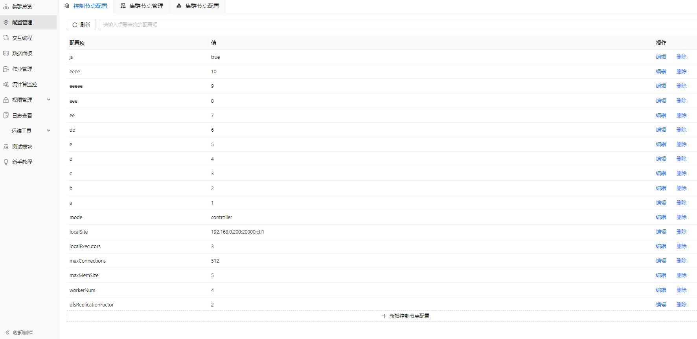
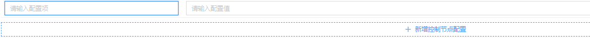
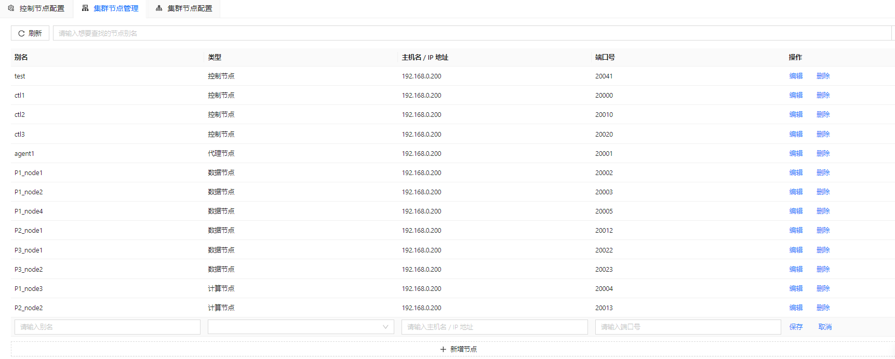
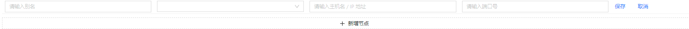
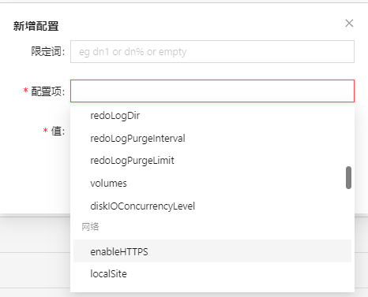

配置管理
在控制节点上，管理员可以对以下配置项进行设置：
- 控制节点配置
- 集群节点管理
- 集群节点配置
具体使用方法，见以下各节。
控制节点配置
管理员可以通过配置管理>控制节点配置页面中的按钮新增、修改或删除控制节点相关的配置项。

新增控制节点配置的方法如下：
- 点击新增控制节点配置。
- 在配置项列输入配置项名称并在值列输入配置项值。
图 2. 添加控制节点配置项

注： 在实际环境中，设置的配置项名称和值应与 DolphinDB Server 版本支持的配置项保持一致。详细配置项名称可以参考：参数配置。 - 点击保存。
如需修改已有的配置项，点击配置项右侧的编辑。
如需删除已有的配置项，点击配置项右侧的删除。
集群节点管理
管理员可以通过配置管理>集群节点管理页面中的按钮新增、修改或删除集群节点。

新增集群节点的方法如下：
- 点击新增节点。
- 为集群节点输入别名、节点类型（数据节点、控制节点、代理节点、计算节点）、主机 IP 地址和端口号。
图 4. 新增节点时需要填充的字段

- 点击保存。
如需修改已有的配置项，点击已有节点右侧的编辑。
如需删除已有的配置项，点击已有节点右侧的删除。
集群节点配置
管理员可以通过配置管理>集群节点配置页面中的按钮添加、修改或删除 DolphinDB Server 内置的集群节点配置项或自定义配置项。

目前已支持的集群节点配置包含以下类别：
| 配置项类别 | 配置项详情 |
|---|---|
| 线程 |
|
| 内存 |
|
| 磁盘 |
|
| 网络 |
|
| 发布流 |
|
| 订阅流 |
|
| 系统 |
|
| 其他 | 用户自定义的非DolphinDB内置的配置项归于此类。 |
添加集群节点配置项的方法如下：
- 点击新增配置。
- 从配置项中按照类别选择已内置的配置项或输入自定义的配置项名称。
图 6. 添加集群节点配置项

- 【可选】设置配置项的限定词。例如，dn1 或留空。
- 设置配置项的值。
如需修改已有的配置项，点击配置项右侧的编辑。
如需删除已有的配置项，点击配置项右侧的删除。